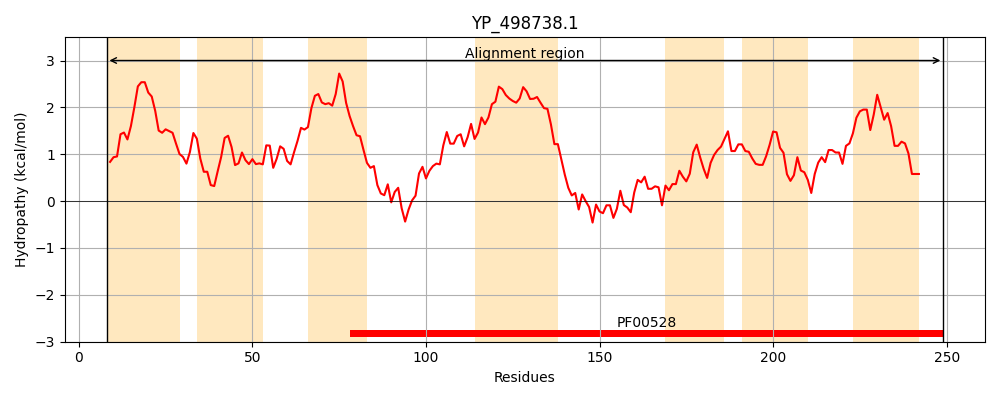
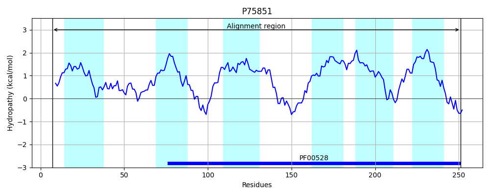
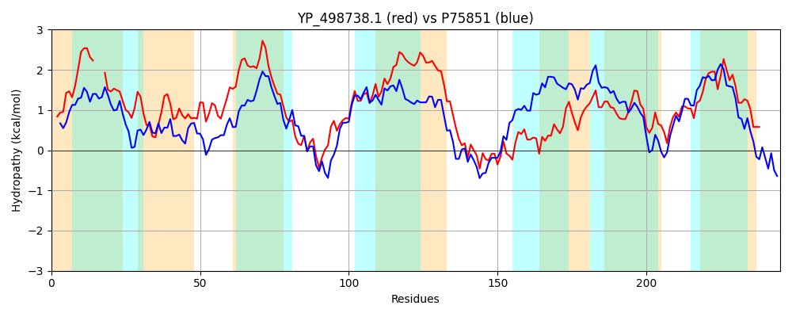

Hit Accession: P75851
Hit TCID: 3.A.1.17.10
Hit Description: gnl|BL_ORD_ID|11418 gnl|TC-DB|P75851|3.A.1.17.10 Putative aliphatic sulfonates transport permease protein SsuC OS=Escherichia coli (strain K12) GN=ssuC PE=1 SV=2
Mach Len: 245
e:0.000000
Query TMS Count : 7
Hit TMS Count: 6
TMS-Overlap Score: 5.400000
Predicted Substrates:CHEBI:33543;sulfonate
BLAST Alignment:
Score: 399 , Bit scores: 158 bits, E-value: 1.3e-47, Alignment length: 245, Percentage identity: 33
Query: 8 KFILPIITFIIFLGI---WEMVIIIGHYQPVLLPGPALVGKSIWSFIVTGEIFQHLAISLWRFVAGFVVALLVAIPLGFLLGRNRWLYNAIEPLFQLIRPISPIAWAPFVVLWFGIGSLPAIAIIFIAAFFPIVFNTIKGVRDIEPQYLKIAANLNLTGWSLYRNILFPGAFKQIMAGIHMAVGTSWIFLVSGEMIGAQSGLGFLIVDARNMLNLEDVLAAIFFIGLFGFIIDRFISYIEQFILR 249
K++L + + + +GI W++ +G +LP P V + W+ +GE++QHLAIS WR + GF + + + LG + G +RW ++ Q++R + +A P V+LWFGI I ++ + FPI NT G+R+I+ +++A + L+G L+ +++ PGA IM G+ A+G W+ L+ E I A SG+G+L ++AR L + V+ AI L G + D +E+ LR
Sbjct: 7 KWLLRVAPWFLPVGIVAVWQLASSVGWLSTRILPSPEGVVTAFWTLSASGELWQHLAISSWRALIGFSIGGSLGLILGLISGLSRWGERLLDTSIQMLRNVPHLALIPLVILWFGIDESAKIFLVALGTLFPIYINTWHGIRNIDRGLVEMARSYGLSGIPLFIHVILPGALPSIMVGVRFALGLMWLTLIVAETISANSGIGYLAMNAREFLQTDVVVVAIILYALLGKLADVSAQLLERLWLR 251 | Protein Hydropathy Plots: |
|---|
|  |  |
Pairwise Alignment-Hydropathy Plot:
|
|---|
|  |